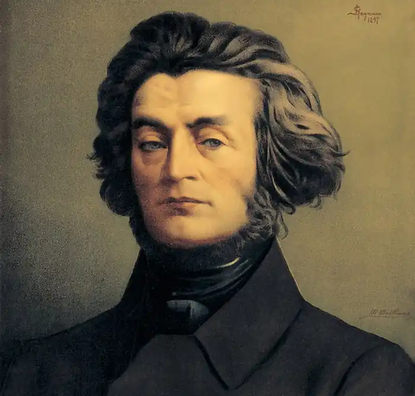
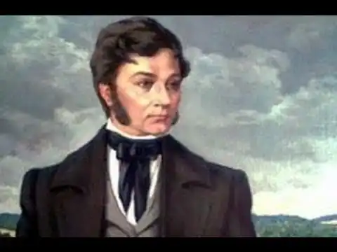

АДАМ МІЦКЕВИЧ
(1798-1855)
Міцкевич — найвидатніший польский поет. Його роль для польської літератури можна порівняти з роллю Пушкіна для російської літератури, Шевченка — для української. Міцкевич був родоначальником нової польської літератури й нової польської мови. Польський поет, засновник польського романтизму, діяч національно-визвольного руху, народився 24 грудня 1798 року на хуторі Заосся біля міста Новогрудка, що входить нині до складу Білорусії. Раніше білоруські землі належали Литві, тому Міцкевич і називає своєю батьківщиною Литву. Батько його, Микола Міцкевич, адвокат, належав до дрібнопомісної шляхти. У будинку Міцкевичів жили волелюбні традиції польських патріотів. Микола Міцкевич сам брав участь у народно-визвольному повстанні 1794 року під керівництвом Тадеуша Костюшка й намагався прищепити почуття патріотизму та волелюбності своїм дітям. Багато цікавих легенд і повір'їв чув юний Адам і від Блажея, значення якого для поета можна порівняти зі значенням Орини Родіонівни для Пушкіна. Розвитку поетичної уяви Міцкевича сприяла й мальовнича природа околиць Новогрудки. Після закінчення школи Адам вступив на фізико-математичний факультет Віденського університету, на якому провчився рік. Навесні 1816 року перейшов на історико-філологічний факультет, що його закінчив у 1819 році. Серед професорів університету були видатні учені й громадські діячі. Тут читав лекції Йоахім Лелевель — родоначальник польської історіографії, брати Снядецькі та ін. Йоахім Лелевель, учитель Міцкевича в роки студентства, пізніше став його близьким другом. Протягом усього свого життя стояв у центрі польського революційного руху. Потім Міцкевич вчителював у Ковно (нині Каунас), 1819-1823). У Ковно Міцкевич побачив незвичайну бідність і убогість народу, гнобленого царською владою і царською поліцією. Це сприяло формуванню революційних поглядів поета, розумінню необхідності рішучої боротьби за визволення народу. Еволюція у світогляді молодого Міцкевича визначила багато в чому й розвиток його творчості. У своїх ранніх творах (до 1820 року) Міцкевич продовжував традиції класицизму, характерного для літератури XVIII століття. Міцкевич пише в цей час антиклерикальну повість "Анеля" у дусі Вольтера, поему "Картопля" і трагедію "Демосфен". Вже в цих творах Міцкевича звучать патріотичний пафос, віра в прогрес, мрія "про часи прийдешні", коли народи, забувши чвари, "у велику родину з'єднаються". Ранні твори Міцкевича (перший вірш опублікований у 1818 році) свідчать про захоплення вільнолюбними традиціями Освіти (переклад уривка з "Орлеанської діви" Вольтера; поеми "Мешко, князь Новогрудка", 1817, "Картопля", 1819). З 1817 року брав участь у створенні й діяльності патріотичних молодіжних гуртків ("прихильників чеснот"), найбільш значними творами цього періоду були "Пісня Адама" — перший гімн філоматів, "Пісня філаретів", написав для них низку програмних віршів, зокрема "Оду до молодості" (1820), перейняту романтичним ентузіазмом молоді, що мріяла про боротьбу за волю. Вихованець Вільнюського університету, він вступив у таємне польське товариство молоді — "філоматів", що у своїй програмі проголошували прагнення до знань, але насправді прагнули до визволення й об'єднання Польщі. У "Оді до молодості" Міцкевич оспівав порив молодого ентузіазму, що руйнує підвалини старого світу. Союз польської молоді поставив епіграфом до свого статуту, прийнятого цього року, слова з "Оди до молодості": Юні друзі! Вставайте разом! Щастя усіх — наша мета і справа. Міцкевич розумів, що для вираження нових ідей, де прогресивні думки стали б надбанням народу, необхідні нові літературні форми. Молодий поет звертається до народної творчості, вбачаючи в ній життєдайне джерело поезії. Так з'являються перші балади Міцкевича, що знаменують початок польського романтизму. Міцкевич у своїх баладах використовує сюжети народної поезії, фантастику казок і переказів. Але поета приваблювали в народній творчості не лише фантастика та яскраві образи. У народі Міцкевич бачив виразника гуманних почуттів, правдивих суджень, високого патріотичного духу. У своїх баладах він прагнув утілити народні поняття про справедливість, моральний обов'язок, патріотизм. У 1822 році був виданий перший том творів поета, до якого увійшли його балади та романси. Ідеї і теми, намічені в баладах, Міцкевич розвинув згодом у своїх великих творах цього періоду: у поемах "Гражина" і "Дзяди" (2 і 4 частини), що увійшли до другого тому його творів. Патріотичний сюжет балади "Світязь" — про подвиг народу, що загинув, але не піддався ворогові,— перегукується із сюжетом поеми "Гражина", у якій описана героїчна боротьба литовського народу проти хрестоносців. В основу сюжету поеми "Гражина" покладений реальний епізод з історії Литви початку XV століття. (Князь Новогрудка Литавор замислив зрадити литовського князя Вітольда через те, що той не хотів видавати місто Ліду, посаг його дружини Гражини. Вона надягає зброю Литавора й стає до бою проти тевтонських лицарів, де й Гине. Литавор мстить за неї, убиває командора й спокутує свою провину, сходячи на багаття разом зі своєю дружиною.) Історичний сюжет під пером Міцкевича набуває романтичного забарвлення. Він яскраво, пристрасно оспівав подвиг відважної народної героїні. Організацію викрили царські шпики та їхні польські посібники. "Філоматів" і близьких до них "філаретів" у 1823 році заарештували, ув'язнили, а восени 1824 року засудили до різного ступеня покарань. Міцкевича не вислали у Сибір, не віддали у солдати. Йому було наказано вирушити до Петербурга. Перший віршований збірник Міцкевича ("Поезія", т. 1, 1822) став маніфестом романтичного напрямку в польській літературі. Дo 2-го тому "Поезії" (1823) увійшла романтична поема "Гражина", що поклала початок жанру т.зв. польської "поетичної повісті"; написана на сюжет з історії Литви, вона утверджувала подвиг і самопожертву героїчної особистості. До другого тому поезії Міцкевича також були включені 2 і 4 частини драматичної поеми "Дзяди". Перша частина поеми залишилася незавершеною, третя частина з'явилася через десять років і мала самостійний характер. У передмові до другої частини Міцкевич пояснює назву поеми: "Дзяди — це назва урочистого обряду, що його справляє донині простий люд у багатьох місцевостях Литви, Пруссії, Курляндії в пам'ять "дзядів", тобто померлих предків". Міцкевича полонила в цьому старовинному обряді не лише романтична таємничість, особлива роль долі у земних справах людей. У перших частинах "Дзядів" уже намічається соціальна схема, що надалі буде основною у творчості Міцкевича. Арештований (1823) у справі філоматсько-філаретських організацій, Міцкевич був у 1824 році висланий з Литви і до 1829 року перебував у Росії (Петербург, Одеса, Москва, знову Петербург), де зблизився з учасниками декабристського руху (К. Ф. Рилєєв, О. О. Бестужев) і видатними письменниками (О. С.Пушкін і ін.), що високо оцінили його талант. Ці дружні зв'язки сприяли визріванню в Міцкевича ідеї революційного союзу народів Росії і Польщі. Міцкевич пробув у Петербурзі близько трьох місяців, а потім його послали до Одеси, де він мав посісти посаду викладача в ліцеї Рімельє. Вільних місць не виявилося. З Петербурга надійшло розпорядження не залишати неблагонадійного поета в Одесі, а відправити його до глибинних губерній Росії. Поки тривало листування щодо подальшого місцеперебування Міцкевича, він відвідав Крим, що справив дуже сильне враження на поета й надихнув його на створення прекрасного циклу "Кримських сонетів". Коли Міцкевич повернувся з Криму, він довідався про своє призначення до канцелярії московського генерал-губернатора. У Росії вийшла книга Міцкевича "Сонети" (1826) з циклом "Кримські сонети", що вразили читача пишнотою пейзажних картин, проникнутих ліризмом, образом героя-"пілігрима", який сумує за покинутою батьківщиною, і новими для польської поезії східними мотивами. У 1828 році була опублікована поема "Конрад Валленрод" (про боротьбу литовців із тевтонською навалою), що зображувала трагічного героя — самотнього борця, котрий жертвує особистим щастям. Наприкінці 1825 року Міцкевич приїхав до Москви. Величезний вплив на Міцкевича справили наслідки повстання декабристів. Він важко переживав жорстоку розправу Миколи І з героїчними революціонерами. Один з біографів поета писав: "Не можна вгадати, узявся б Міцкевич за зброю, якби опинився в Петербурзі під час повстання 14 грудня 1825 року. Але безсумнівно, що він би розділив їхню долю...". Спочатку Міцкевич жив у Москві усамітнено, спілкуючись лише зі своїми віденськими друзями-філоматами. Навесні 1826 року Міцкевич познайомився з московським літератором Миколою Полєвим, який ввів його до літературних кіл Москви. Міцкевич зблизився з найвидатнішими представниками російської літератури — Баратинським, Веневітіновим, Вяземським, Соболевським та іншими, У жовтні 1826 року відбулося знайомство Міцкевича з Пушкіним, що потім переросло в щиру дружбу. 12 жовтня 1826 року він був присутній при читанні Пушкіним "Бориса Годунова" у поета Д. Веневітінова. Відтоді й аж до свого від'їзду Міцкевич перебував у центрі культурного життя Росії. Живучи в Москві, часом наїжджав до Петербурга, бував на літературних вечорах, зустрічах, де він, володіючи неперевершеним талантом імпровізатора, часто виступав. Збереглося багато спогадів про ці імпровізації поета. У Петербурзі Міцкевич познайомився з Жуковським, Грибоєдовим, Криловим, Дельвігом, чимало часу проводив у бесідах з Пушкіним. Міцкевич планував видавати в Росії польський журнал "Ірида", який би сприяв розширенню польсько-російських культурних зв'язків. Однак йому, як особі під "підозрою", це видання було заборонене. Важко переоцінити значення російського періоду життя для розвитку творчості Міцкевича. Затятий ворог самодержавства, він одначе чудово порозумівся з російськими революціонерами. У Росії Міцкевич сформувався як поет дружби слов'янських народів. Тут він став глибше розуміти ідею національної незалежності Польщі, збагнувши її тісний зв'язок з міжнародною політикою. У ці роки він стає оповісником політичної свободи. Одночасно відбувалося і зростання художньої майстерності Міцкевича, цьому сприяло спілкування з російськими літературними діячами, і насамперед з Пушкіним.